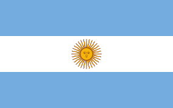
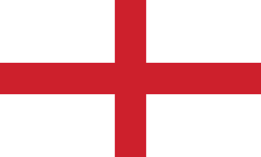
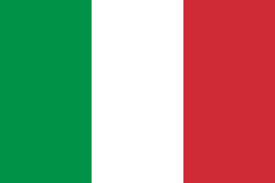

Home
Notícias
Jogos
Bolões
Calendário e horários da Copa do Mundo 2022
Rodada 1
Senegal x Holanda
:
21.11.2022 – 06:00 - Estádio al-Thumama
Inglaterra x Irã
:
21.11.2022 – 09:00 - Estádio Internacional Khalifa
Catar x Equador
:
21.11.2022 – 12:00 - Estádio al-Bayt
EUA x WAL/SCO/UKR
:
21.11.2022 – 15:00 - Estádio al-Rayyan
Argentina x Arábia Saudita
:
22.11.2022 – 06:00 - Estádio Lusail
Dinamarca vs Tunísia
:
22.11.2022 – 09:00 Estádio Education City
México vs Polónia
:
22.11.2022 – 12:00 Estádio Ras Abu Aboud
França vs UAE/AUS/PER
:
22.11.2022 – 15:00 Estádio al-Janoub
Marrocos vs Croácia
:
23.11.2022 – 06:00 Estádio al-Bayt
Alemanha vs Japão
:
23.11.2022 – 09:00 Estádio Internacional Khalifa
Espanha vs CRC/NZL
:
23.11.2022 – 12:00 Estádio al-Thumama
Bélgica vs Canadá
:
23.11.2022 – 15:00 Estádio al-Rayyan
Suiça vs Camarões
:
24.11.2022 – 06:00 Estádio al-Janoub
Uruguai vs Coréia do Sul
:
24.11.2022 – 09:00 Estádio Education City
Portugal vs Gana
:
24.11.2022 – 12:00 Estádio Ras Abu Aboud
Ranking da FIFA
Última atualização: 31 de mar., 06:00
Brasil: 1832
pts.
Bélgica: 1827
pts.
França: 1789
pts.
 Argentina: 1765
pts.
 Inglaterra: 1761
pts.
 Itália: 1723
pts.
Espanha: 1709
pts.
Portugal:1674
pts.
México: 1658
pts.
Holanda: 1658
pts.
Todos os direitos reservados